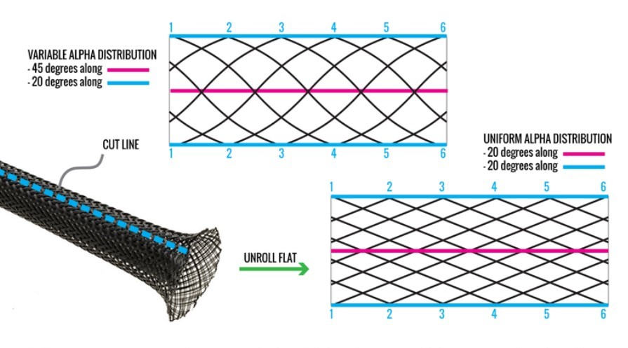
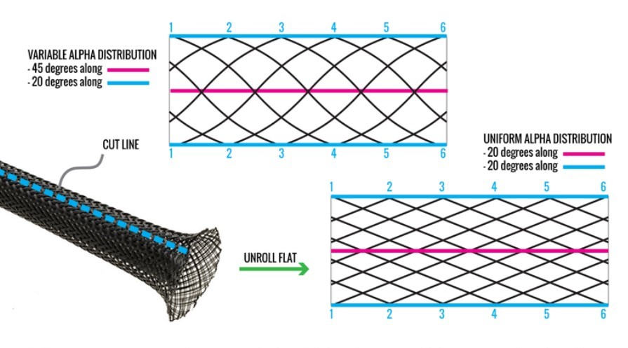

Robotics
Circuitry + Digital Signal Processing + Feedback Control + Arduino + Raspberry Pi + Computer Vision + CAD
Mechatronics Course
CU Boulder's Mechatronics course revolved around designing a simple robot to execute a series of tasks
determined by the class.
We came up with a 'police academy' training course. The robot must autonomously navigate the course, identify
criminals from bystanders
(read: red construction paper people from green ones), and knock them over with a physical projectile. The
work was entirely hands-on.
I spent hours wiring circuits to microcontrollers, examining component datasheets, scripting in arduino, and
troubleshooting any hardware or software issues that arose.
And then there was COVID. The abrupt and complete campus closure drastically changed the
nature of class and
overall feasibility of the project.
Nearly all groups disbanded, opting for one of the impromptu, hands-off alternatives offered. Thankfully, the
professor and I worked out a solution for
any groups who wanted to continue: turn my one-bedroom apartment into an off-campus robotics lab. Given the
vastly diminished resource access, expectations were lowered.
In the end, we completed and proofed all subsystems (navigation, target ID, and projectile), but could not
perform an integrated test due to resource limitations.
But we made the best of a lousy situation without completely losing out on one of the most enriching courses
I've ever taken.

Industrial Automation Course
Dr. Shalom Ruben's
Industrial Automation course taught practical implementation of classical signal processing
and feedback control theory through project-based lab work.
We learned analog to digital signal conversion, digital to analog signal reconstruction, system
identification and modeling, and experimented implementing
these techniques using a Single-Input-Single-Ouput device, the
T-RECS System.
The stock product used an Arduino Nano and potentiometer sensor, but we modified the base design to include an
encoder, accelerometer, and Arduino Due.
This advanced functionality allowed us to compare sensor performace, implement system feedback
control, and dive deeper into the world of digital
signal processing overall. The hands-on coursework involved significant microcontroller programming,
MATLAB scripting, component datasheet investigation,
and experimental design. Dr. Ruben is a terrific professor, and his class greatly expanded my
knowledge of signal processing, programming, and circuitry design.
Soft Machines Course
Dr. Christoph Keplinger's class on the application of non-rigid materials in robotics and electronics was equal parts informative and inspiring. The pot-pourri of topics included polymer chemistry, dialectrics, passive energy generation, and everything inbetween. I learned a great deal about the current challenges facing robotics today, and how the burgeoning field of soft machines might solve them. As part of the course, Dr. Keplinger gave us access to his lab to build two simple soft actuators: the Donut HASEL and DEA. Each group had to document the fabrication process with an 'entertaining' video (above). For the final project, groups composed a research paper on a soft robotics topic of their choosing. Beyond explaining the topic and reporting on current research areas, we composed a research proposal of our own for the technology. My group chose McKibben Muscles. Our research proposal investigated the potential for asymmetric braid patterns to generate curved actuation paths. According to Dr. Keplinger: "[He] would fund that."
 
